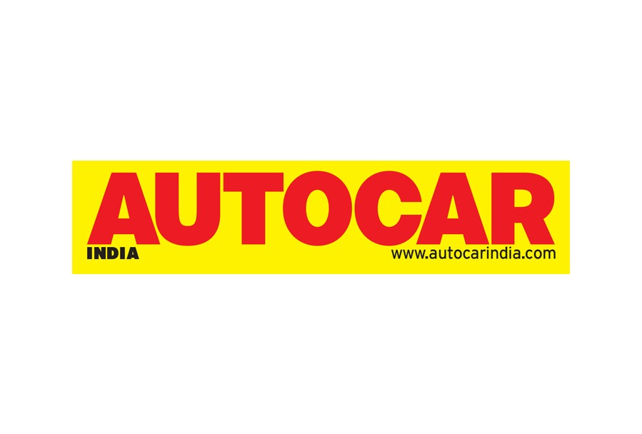

Experience
Automation and Research Specialist - Editorial Intern

Autocar India
July 2025 - December 2025
- Assisted in automating editorial workflows by merging the Make–Model database with the Spinny database, improving data consistency and reducing manual updates across variant pages.
- Assisted senior reviewers by preparing detailed spec-sheets, comparison data, research notes, and performance insights used for written reviews and video scripts.
- Maintained Make–Model pages, updating specifications, pricing, variants, and feature changes to ensure accuracy across the website.
- Fact-checked technical information such as engine outputs, dimensions, variant differences, and feature highlights to ensure editorial reliability.
Application Security Testing & Vulnerability Assessment - Intern
Disney Star (The Walt Disney Company)
June-October 2024
- Analysed and executed over 15 in-depth vulnerability assessments and penetration tests on web and software applications, identifying critical security flaws and contributing to a 40% reduction in exploitable vulnerabilities.
- Utilized industry-standard tools including Burp Suite, Fortify, and Snyk to detect security flaws such as injection, misconfigurations, and insecure dependencies.
- Prioritized and remediated critical vulnerabilities, significantly strengthening application security and compliance posture.
- Stayed current on emerging threats and trends in cybersecurity, adapting testing methods as needed to address new risks.
Freelance Prompt Engineer

Outliter.Ai
November 2024-March 2025
- Generated and reviewed over 1,000 prompts and responses to train and fine-tune large language models (LLMs), improving output accuracy and contextual relevance by 30%+.
- Collaborated remotely with cross-functional teams to ensure high-quality, diverse datasets across multiple domains, contributing to the scalable deployment of AI systems.
- Evaluated and refined AI-generated outputs to ensure accuracy, clarity, and alignment with task guidelines.
- Maintained high productivity and quality standards in a fast-paced, remote freelance environment.
Service & Quality Assurance - Intern

Larsen & Toubro Infotech Mindtree
January - April 2023
- Spearheaded the strategic categorization and prioritization of over 2,000+ service tickets monthly, leading to a 25% reduction in average resolution time and improved SLA adherence across multiple client accounts.
- Led the strategic categorization and prioritization of service tickets to enhance operational efficiency and ensure alignment with quality standards.
- Audited and evaluated 100+ service tickets per week for compliance with internal SOPs and client-specific SLAs.
Projects
LawGIC-AI
An AI-powered legal tool that answers legal queries using the 2023 BNS, BNSS, and BSA codes, with section-wise references for accurate legal guidance. Combines natural language processing with legal database integration.
CAN Bus Security Analysis
Comprehensive automotive cybersecurity research project that simulated and analysed vulnerabilities in the Controller Area Network Bus used in modern vehicles. Demonstrated DoS and replay attacks on a virtual CAN environment and implemented custom tools to monitor and manipulate CAN traffic.
Skills
Security Tools
Programming
Education
B.Tech in Computer Engineering (Degree+Diploma)
Mukesh Patel School of Technology Management & Engineering (NMIMS)
July 2019 - June 2025
CGPA - 3.47/4
I.C.S.E
Christ Church High School
ICSE Board Exam - 87%